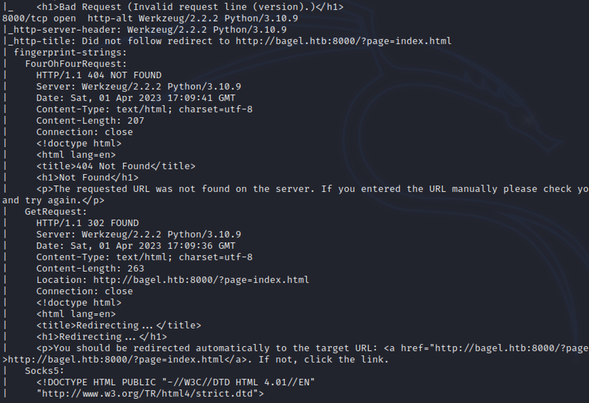
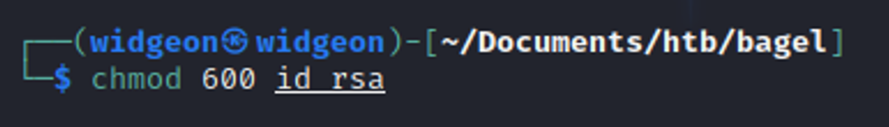

April 1, 2023
Bagel
Tools Needed: Burp Suite, dnSpy and GTFOBins.
Step 1: Start off with an Nmap Scan
nmap -sV -sC <IP ADDRESS> -oA <FILE NAME>
Find a lot of output compared to normal for our first nmap. We’re seeing some Microsoft Netcore applications and a web page.
Just did another quick nmap to get all the ports in one shot.
Checking out the page we can see that the home page has a potential LFI (Local File Inclusion) on it.
These are some of the priciest bagels I’ve ever seen.
And they don’t really care about customer info, but that doesn’t matter to us right now!
You can explore the local file system with this LFI. It’s a lot easier to navigate through with burp suite so let’s pass this request to repeater.
We can read the /etc/passwd file and we can also see the Server is running on Werkzeug.
Looks like phil or developer will be our user.
If you check out the proc / self / cmdline we can find the app’s path.
Initially, attempted to send this through intruder but it’s an easy thing to automate in bash, and goes way quicker.
for id in {1..5000}; do curl "http://bagel.htb:8000/?page=../../../../../../../proc/$id/cmdline" --output - && echo " :$id\n"; done >> ./cmd_output.txt
There’s a lot of nothing, but we start seeing some interesting dlls and other files. Found this dll mentioned in many of the lines.
We can try to download this file with curl.
Using file on the file
Let’s move this to a Windows machine so we can use dnSpy.

This is very lengthy and takes a long time to comb through.
Not a lot in the first few files, maybe another section would be better to start.
We see something specific to bagel.
Main
DB connection, with a database password, not very handy right now, but we may use it later.
Deep in the file structure we see some de-serialization happening.

Which led me to this article:
Exploiting JSON Serialization in .NET Core
This exploit lets us download files remotely, and we remember the user Phil and developer, so we can try grabbing his id_rsa so we can log in with their SSH keys.
We can get Phil’s key but not Developer’s.
Let’s go in as Phil and get our user flag!
Not a lot to go off on linPEAS. A lot of dead ends for me and not a lot of info.
We know there are two potential users for us to get: Developer and Root.
After no luck getting anywhere, I decided to take a step back and go for something easy, which was password re-use. Developer used the same password as in the .dll DB Connection.
Once you become Developer, you can check what his sudo privileges are.
We’re able to run dotnet as sudo. If you check out GTFObins, there’s a sudo privilege exploit that works!
Grab your root flag, bagel has been pwned.
Success! Bagel has been pwned 😎